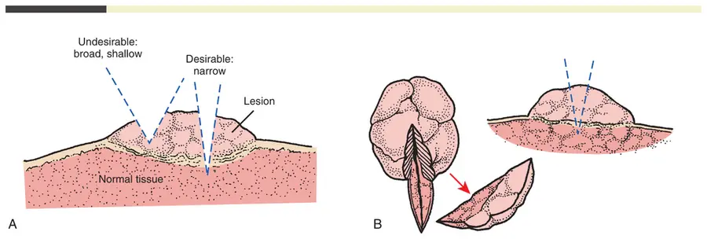
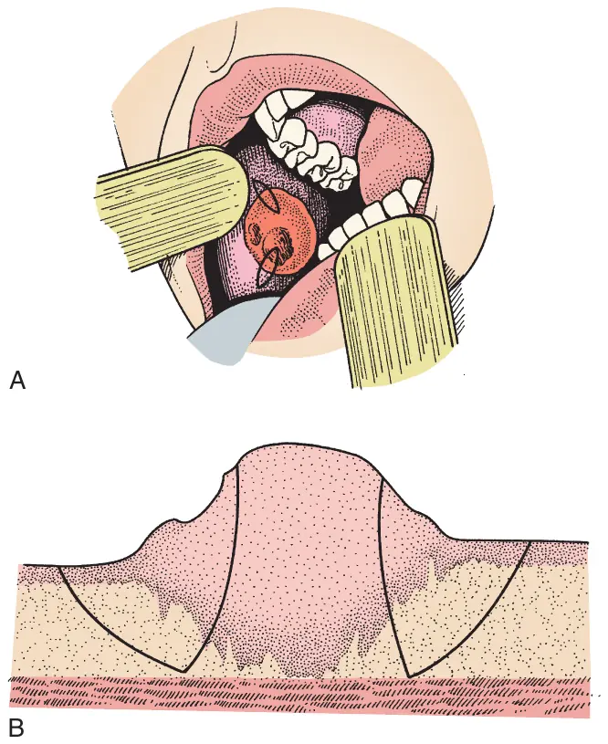

نسخه استخراجشده؛ ترجمه یا تأیید علمی انجام نشده است. وضعیت: captured
قاعدهی اول — عمق بر پهنا مقدم است: عموماً بهتر است نمونهای باریک و عمیق برداشته شود تا نمونهای پهن و کمعمق.

و دلیلش دقیق است: اگر سلولهای بدخیم تنها در کف ضایعه حضور داشته باشند، یک بیوپسی پهن و کمعمق ممکن است این سلولهای تشخیصی را به دست نیاورد. پس باید دقت شود که عمق کافی از بافت هم گنجانده شود تا ویژگیهای سلولی کف ضایعه در نمونه بیایند.
قاعدهی دوم — از لبه بردار، نه از مرکز: نواحی مرکزی یک ضایعهی بزرگ اغلب نکروتیکاند و بنابراین ارزش تشخیصی کمی برای پاتولوژیست دارند، در حالی که رشد فعال در محیط ضایعه در جریان است.
پس گنجاندن فصل مشترک ضایعه با بافت با ظاهر طبیعی میتواند بسیاری از تغییرات سلولی معنادار را نشان دهد — و تأکید میکنیم که این نکته بهویژه هنگام بیوپسی از یک زخم اهمیت دارد.
و یک احتیاط آناتومیک: باید مراقب بود که ساختارهای آناتومیک مهم مجاور مانند اعصاب و رگهای خونی بزرگ به خطر نیفتند — مگر آنکه به نظر برسد با منشأ یا پاتولوژی ضایعه ارتباط دارند.
و حالا بیحسی — جایی که یک اشتباه ساده میتواند نمونه را نابود کند:
تثبیت بافت: بیوپسیهای بافت نرم دهانی و پیرادهانی اغلب سطوح و ساختارهای متحرک را درگیر میکنند — لب، گونه، کام نرم، و زبان. برشهای جراحی دقیق را وقتی میتوان با سهولت بیشتری گذاشت که بافتهای درگیر ابتدا تثبیت شده باشند.

هموستاز — و یک توصیهی غافلگیرکننده دربارهی ساکشن: استفاده از ساکشن برای پاک نگه داشتن میدان جراحی باید تا حد امکان به حداقل برسد — بهویژه ساکشنهای پرحجم مطبهای امروزی.
برشها: باید از یک تیغ تیز، معمولاً شمارهی ۱۵، برای برش بافتها استفاده شود. دو برش بیضوی (توپفوتبالیشکل) روی سطح مخاط میتوانند چنان زاویه بگیرند که در کف به هم برسند — این کار نمونهای بهینه و زخمی میدهد که بستنش آسان است.
و ابزاری که نباید به کار ببری: استفاده از دستگاههای لیزر و تجهیزات الکتروسرجری برای برشهای بیوپسی مطلوب نیست — چون اثرات بافتیشان تخریب بافت مجاور را سبب میشوند و ممکن است معماری بافتشناختی نمونه را تا حدی مخدوش کنند که جزئیات میکروسکوپی قطعی نابود شوند.
استثنا: لیزر دیاکسید کربن در حالت سوپرپالس با پرتوی تنگ و خوبفوکوسشده در صورت لزوم (مثلاً برای هموستاز) میتواند به کار رود — ولی جراح باید بداند که یک ناحیهی باریک نکروز در کنار حاشیههای نمونه از لیزر باقی میماند.
و جهت برش: تا حداکثر حد ممکن، برشها باید موازی مسیر طبیعی اعصاب و رگهای خونی و نیز خطوط کشش عضلانی — یعنی خطوط لبخند و چینهای صورت — باشند، تا آسیبهای ثانویه به حداقل برسند و به دلایل زیبایی.